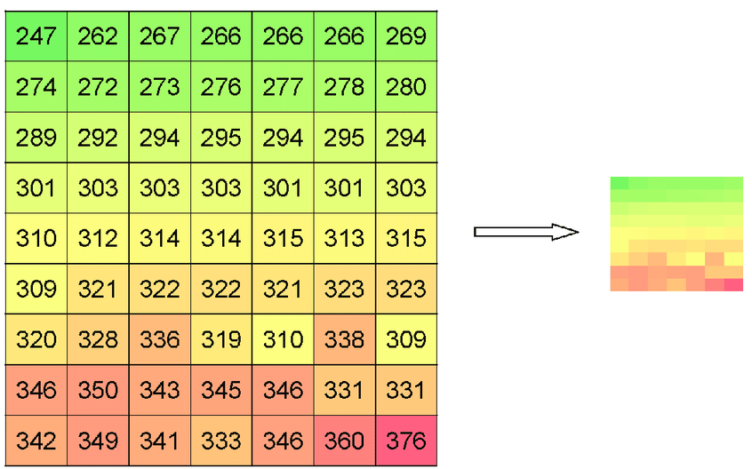
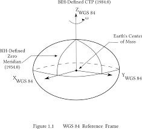
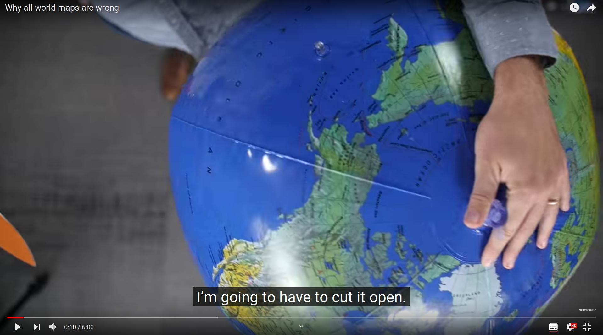
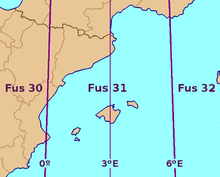

Fonaments¶
Que és un GIS?¶
S’entèn com a GIS (Geographic Information System) tota aquella tecnología relacionada amb dades Georeferenciades i els seus atributs, i que ens permet realitzar anàlisis avançats sobre aquests.
Ara no ens fa falta profunditzar massa en la complexitat de les dades, però si que hem de saber un parell de coses importants:
Quines dades podem treballar?¶
Bàsicament es treballa amb 3 tipus de capes vectorials:
- Punts
- Línies
- Polígons
{kind=link}
o amb capes ràster (grids):
{kind=link}
Nosaltres accedirem a imatges Ortofotogràfiques o Topogràfiques a travès de serveis WMS
Hi han altres formats de dades en el món del GIS (VectorTiles, grids mesh, etc)
La topología¶
Per a poder realitzar anàlisis correctament, y relacionar espaialment els diferents elements geogràfics entre ells, les dades que es tracten han de tenir una topología correcta.
Els Sistemes de coordenades¶
Sistemes de Coordenades Geogràfiques¶
Les coordenades geogràfiques corresponen al concepte de la latitud i la longitud, i determinen la posició d’un punt de la superfície terrestre. Les línies de referència són l’equador terrestre i un meridià inicial (el de Greenwich per conveni).
Per exemple:
- Cal Temerari -> 2.08311,41.47464 (WGS 84)
La posició dels elements sobre la Terra és mesura en angles (graus)
{kind=link}
Aquest SC és vàlid per a la totalitat de la superfície de la Terra, i s’usa per als sistemes GPS. Hi ha també SC vàlids només per a entorns locals
Però, com mesurem les distàncies entre els elements, o les arèes que ens interessen? Amb un SCGeogràfic es pot fer, però és complex.
Per sort hi han solucions, tot i que no són perfectes...
Sistemes de Coordenades Projectades¶
Nota
Nosatres usarem sempre, a Catalunya, EPSG:25831
Els sistemes de coordenades projectats venen especificats per una referència EPSG.
Per a nosaltres, que usarem coordenades UTM 31N i ETRS89, de moment només ens interesa conèixer el nostre amic EPSG25831
{kind=link}
Ara:
- Cal Temerari -> 423443.815,4591854.415 (EPSG 25831)
Ara si que ja podem mesurar les distancies en metres, i les àrees en metres quadrats!